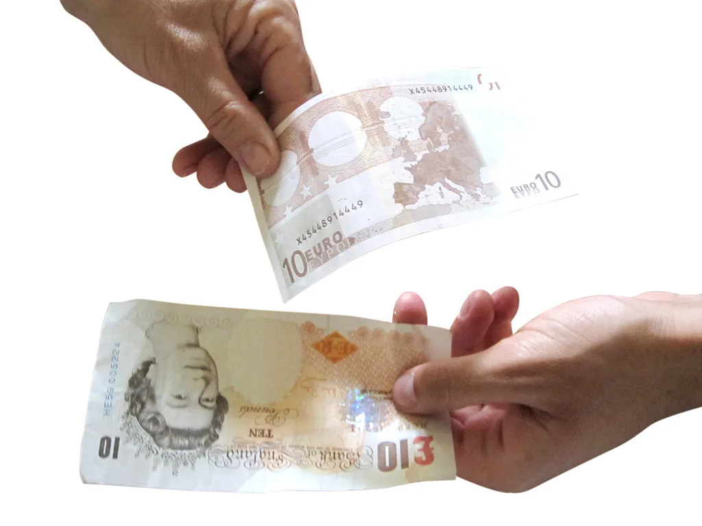

정부, '원화 국제화 로드맵' 발표
정부가 원화를 해외에서도 자유롭게 거래할 수 있는 통화로 전환하기 위한 중장기 청사진, 이른바 '원화 국제화 로드맵'을 지난 19일 발표했다. 원화의 국제적 활용도를 단계적으로 높여 외환시장의 체질을 개선하고, 우리 경제의 대외 신인도를 한 단계 끌어올리겠다는 구상이다. 그동안 꾸준히 논의만 되어 오던 원화 국제화가 구체적인 정책 일정표로 제시된 것은 의미 있는 진전이라는 평가가 나온다.
원화는 한국 경제의 규모에 비해 국제 금융시장에서의 활용도가 낮다는 지적을 받아 왔다. 역외에서의 원화 거래에 여러 제약이 있고, 외국인 투자자가 원화 자산에 접근하는 절차도 다른 선진국 통화에 비해 복잡하다는 것이다. 이런 제약은 환율 변동성을 키우고 '코리아 디스카운트'의 한 원인이 된다는 분석도 제기되어 왔다.
이번 로드맵은 이러한 문제의식에서 출발한다. 해외 투자자와 기업이 원화를 보다 쉽게 조달하고 운용할 수 있도록 거래 인프라와 제도를 정비하고, 궁극적으로는 원화가 무역 결제와 금융 거래에서 폭넓게 쓰이는 통화로 자리 잡도록 하겠다는 방향이 담긴 것으로 알려졌다. 정부는 시장 상황을 살펴 가며 단계적으로 개방 수위를 조절할 방침이다.
전문가들은 원화 국제화가 성공적으로 진행될 경우 환율 안정, 외화 조달 비용 절감, 국내 금융시장의 위상 강화 등 다양한 긍정적 효과를 기대할 수 있다고 본다. 다만 자본 이동이 자유로워지는 만큼 국제 금융시장의 충격이 국내로 전이되는 통로도 함께 넓어질 수 있어, 위기 대응 체계를 함께 갖춰야 한다는 지적도 뒤따른다.

한편 한국은행은 이와 맞물려 발표한 경제 평가에서 올해 국내 경제에 대해 비교적 낙관적인 전망을 내놨다. 중동 정세 불안 등 대외 불확실성이 이어지고 있음에도, 반도체 경기 호조와 그에 따른 수출·투자 파급 효과에 힘입어 성장세가 오히려 확대될 것으로 내다본 것이다.
반도체를 중심으로 한 수출 회복세가 설비 투자와 고용으로 이어지는 선순환이 나타난다면, 원화 국제화 추진에도 우호적인 환경이 조성될 수 있다는 관측이 나온다. 통화의 국제적 위상은 결국 그 나라 경제의 기초 체력에 좌우되는 만큼, 이번 로드맵의 성패 역시 한국 경제의 성장 흐름과 맞물려 결정될 것으로 보인다.